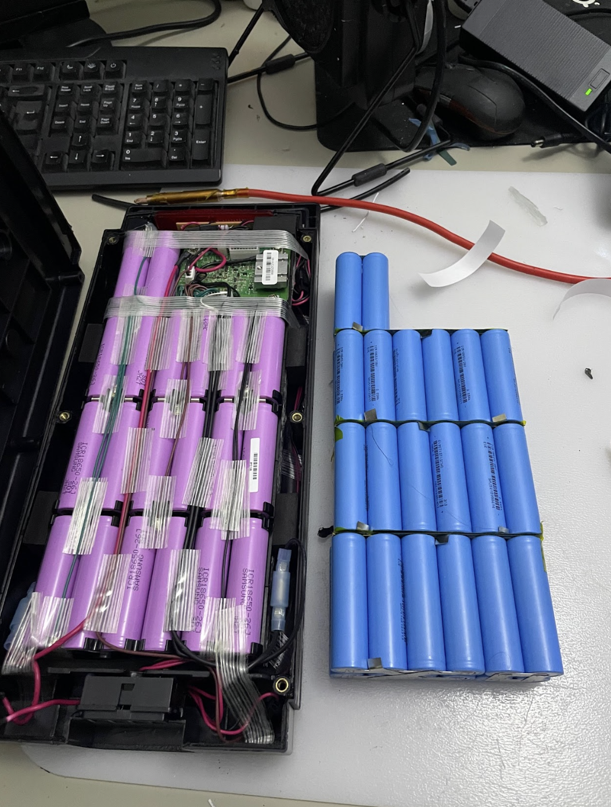
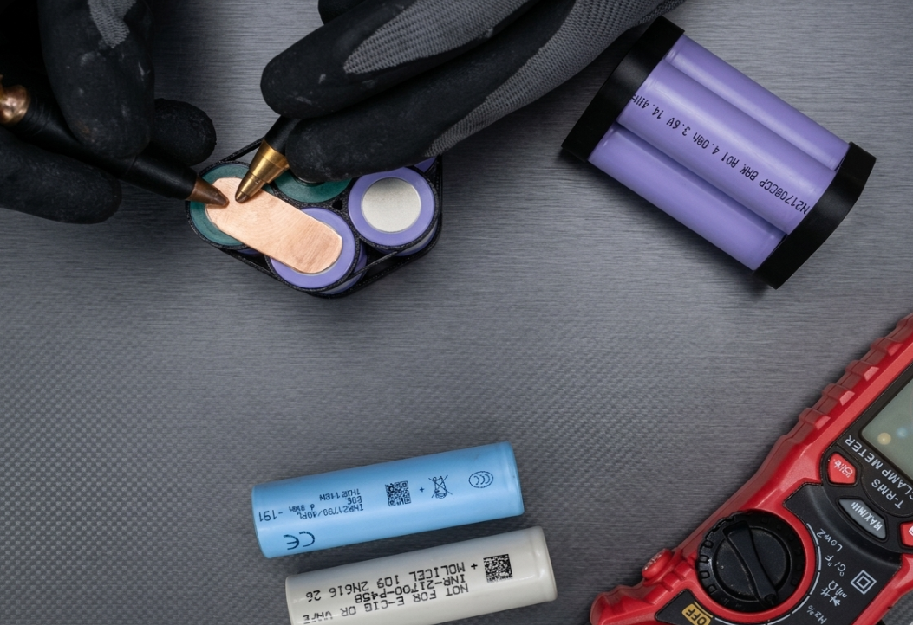
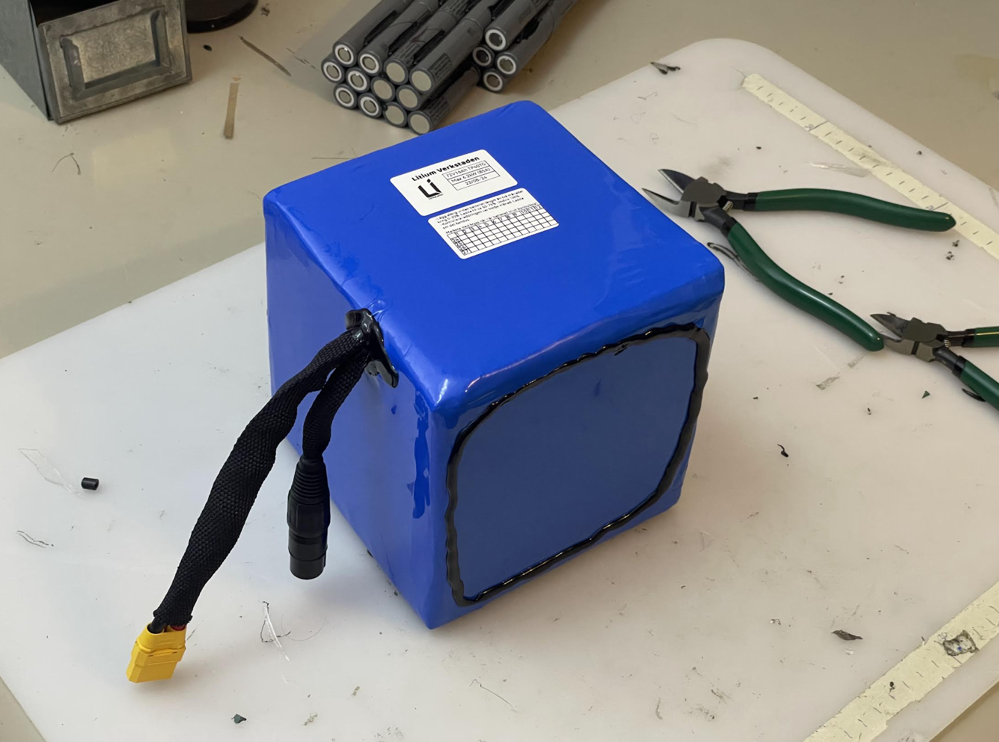

Reparation
Varför renovera elcykelbatterier och hur det går till
Varför renovera?
- Billigare: Man kan spara många tusenlappar genom att reparera det gamla och inte köpa ett nytt.
- Prestanda: Med högre än orginalkapacitet får du längre körsträcka med ett renoverat batteri. Detta tack vare kvalitetsceller med mycket hög energidensitet. Uppskattat av många! Dessutom behöver du inte ladda lika ofta efter en renovering med högre kapacitet, vilket ger batteriet längre livslängd.
- Livslängd: Ditt batteri får längre livstid! Vi använder oss bara av de bästa cellerna. På så sätt kan våra batterier hålla i upp till 12 år. Många tillverkare snålar in på cellkvalitet och därför håller deras batterier inte många år efter att garantin gått ut, 2-5år.
- Trygghet: Vi ger 2 års garanti på totalrenoveringar. Längre garanti än du får på de flesta nya batterier. För att du ska kunna känna dig trygg med ditt "nya" batteri
- Hållbarhet: Spara på klimatet och jordens resurser genom att reparera det gamla istället för att köpa nytt! Nytillverkning av litiumbatterier innebär flera risker för både miljö, hälsa och mänskliga rättigheter. Genom att renovera det gamla batteriet bidrar du till en mer hållbar värld
Hur går en reparation till?
Steg 1. Vi felsöker batteriet och identifierar om det går att renovera och hur det ska ske.
Steg 2. Vi 3D-printar själva batteri- och cellhållare anpassade för batteriet.
Steg 3. Vi punktsvetsar och sätter ihop batteriet och BMS.
Steg 4. Vi applicerar krympplast och förseglar med vattentätsilikon.
Steg 5. Vi installerar batteriet i dess skal.
Steg 6. Vi genomför kvalitetskonroll av batterier för att säkerställa att det lever upp till vår standard.



